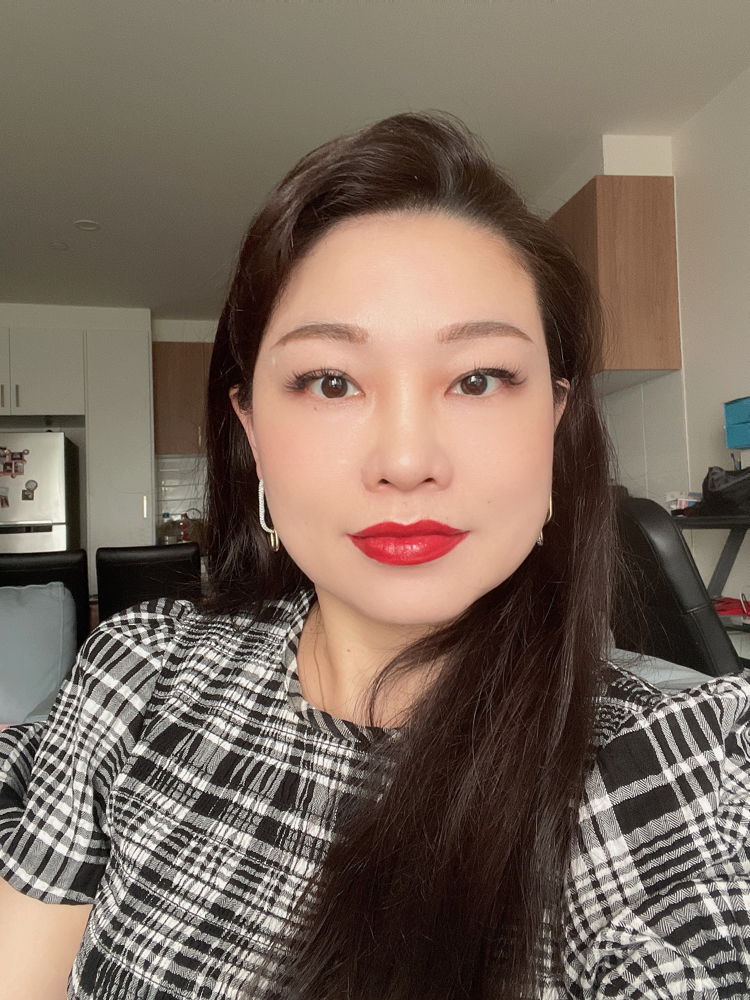
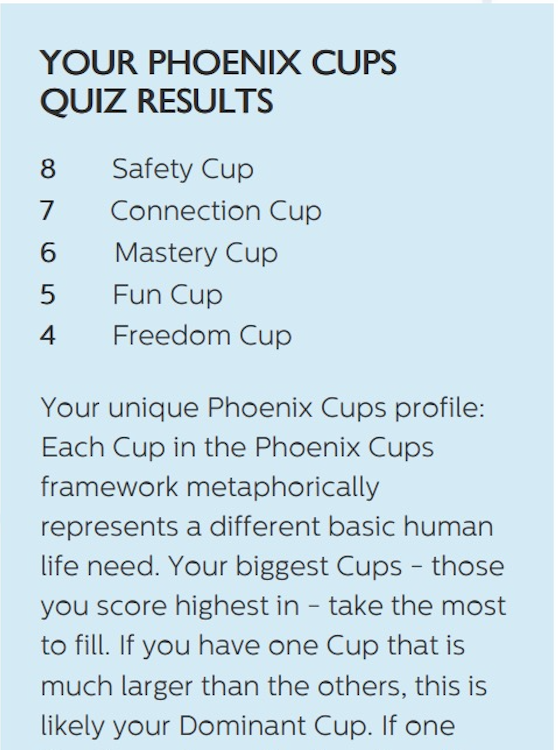
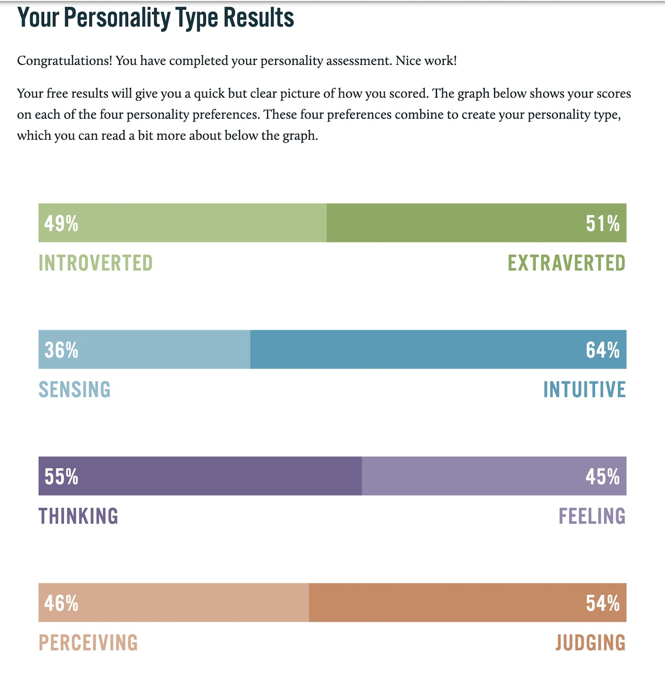

Team Alpha
Name: Jing Li
I came from China and lived in Melbourne about 10 years. I have worked
in Education field for 20 years, I grew up in China and decided to move
to Australia as I wanted to experience living in a different country.
I'm interested in Sci-fi and
read a lot of Sci-fi novels. I also like to play video and PC games
when I have time, and like most people, I like to watch movies. I
sometimes enjoy painting and trying new food with my family.
I started to think about the programming was fun in
the "ICT in education" course I did last year. Our final assignment
was to build a short Scratch project to apply in teaching. I couldn't
find a word to describe my feelings when I finally finished my project.
Since then, I realize that programming is more fun than games even
if it's a big challenge for me.
My personal learning style test
Phoenix Cups Test Result

MBTI Test
Honey and Mumford learning Types Test
Result: Theorist
You learn better in structured learning activities which follow a logical sequence. You prefer lecture, demonstrations, theory and precision teaching. You are great at integrating your research into complex and logically sound theories. You approach all problems through a logical process and can combine seemingly disconnected concepts into a rational scheme. You tend to be a bit of a perfectionist. You love to study from principles, theories and models. You tend to be detached, analytical and rational and don't like ambiguity or subjectivity.
In MBIT test, my result is interesting, the value of introverted
and extraverted is very close, means I am balance between social
and non-social. I would like to think more instead depends on
feelings, use judging more than perceiving. This feature is good
on the group, because I will more think about how to get the job
done and how to solve the problem, instead of emotional behaviour.
In Honey and Mumford learning types test, I learn better in structured learning
activities which follow a logical sequence. As learning become to IT professional,
logical thinking is very import in the work. The result showed I approach all
problems through a logical process which helps group to solve problem in the l
ogical way.
In Phoenix cups test, my unique phoenix cups profile looks close equally,
that means, safety, connection, mastery are my master cups. They would give
me inner driver to connect with people that can help group members building
connection with each other.
To achieve a teamwork, every member in the group must have spirit of teamwork,
the knowledge of how to make it works, and the action to get the job done.
Avoid the conflict, solve the problem, and make everyone feel happy is not easy.
Use our strength to help each other is the key to achieve the goals.